01
Injeção eletrônica
Limpeza de bicos, falhas, consumo alto e luz da injeção acesa, com leitura por scanner.
Pedir orçamentoOficina mecânica na Vila Maria Auxiliadora · Embu das Artes
Injeção eletrônica, motor e câmbio, suspensão, freios, escapamento, elétrica e ar-condicionado numa oficina ampla e organizada.
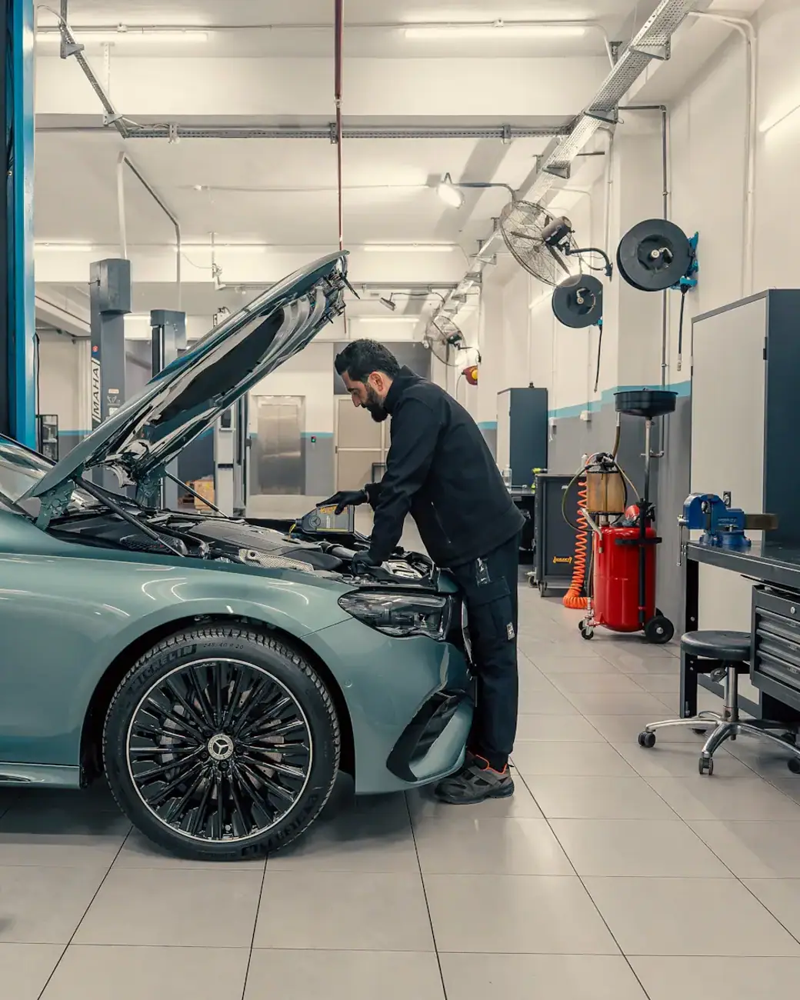
Carro pronto, muitas vezes no mesmo dia
Escolha o serviço e fale direto com a Mecânica Embu. A mensagem já vai pronta no WhatsApp, é só dizer o modelo do carro.
Limpeza de bicos, falhas, consumo alto e luz da injeção acesa, com leitura por scanner.
Pedir orçamento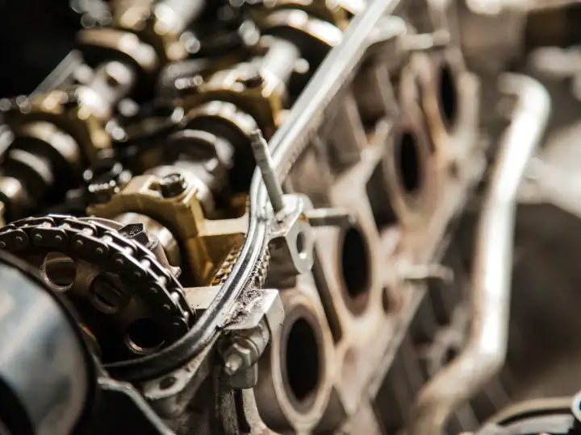
Junta de cabeçote, correia dentada, vazamentos e retífica, com a medição certa de cada peça.
Pedir orçamento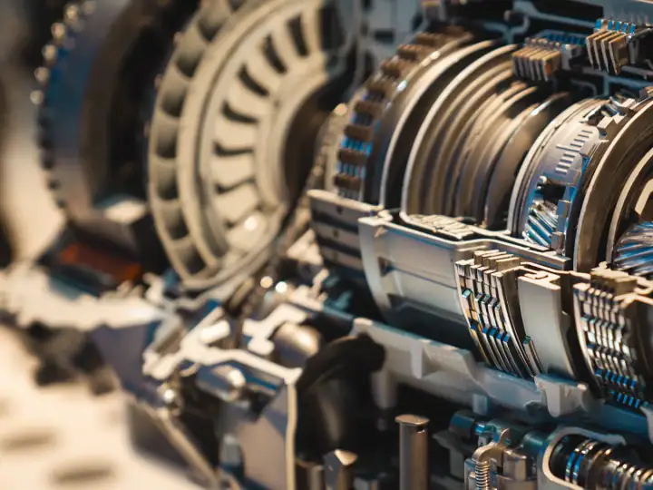
Troca de óleo do câmbio, trancos e patinação no automático, com diagnóstico antes de qualquer reparo.
Pedir orçamento
Amortecedores, molas, buchas e barulhos na suspensão, para o carro voltar a ficar firme e confortável.
Pedir orçamento
Pastilhas, discos, fluido e revisão completa do sistema de freio. Barulho ou pedal baixo não se deixa para depois.
Pedir orçamento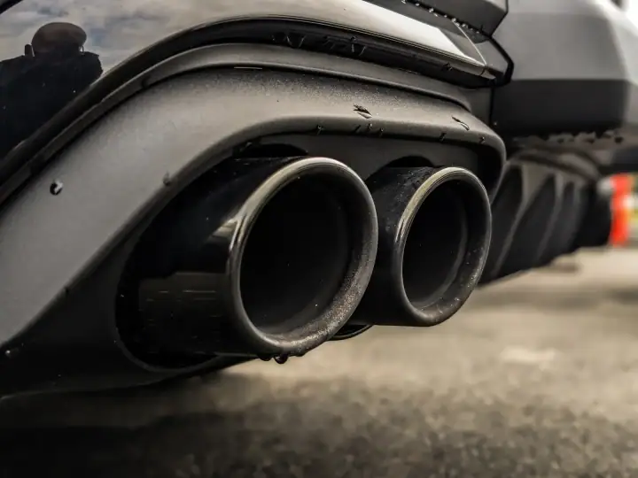
Barulho, vazamento ou cheiro de fumaça: reparo e troca de escapamento e catalisador.
Pedir orçamento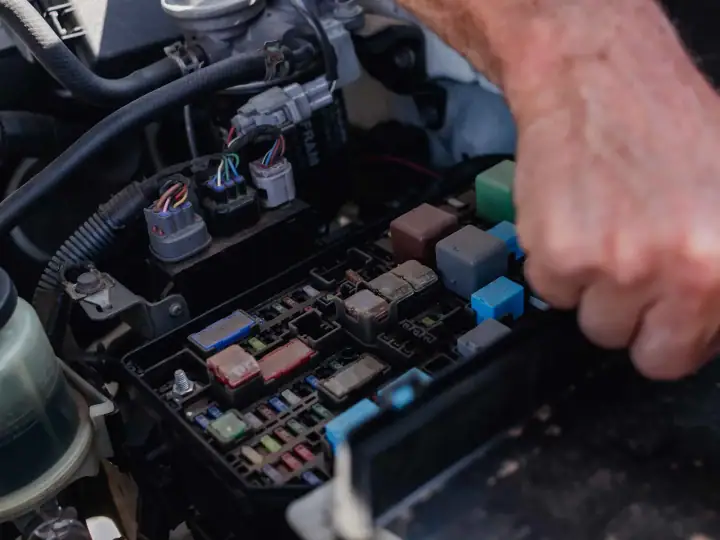
Alternador, motor de partida, chicotes, luzes e falhas elétricas encontradas com teste, não no chute.
Pedir orçamento
Higienização, carga de gás e reparo do ar-condicionado para voltar a gelar de verdade.
Pedir orçamento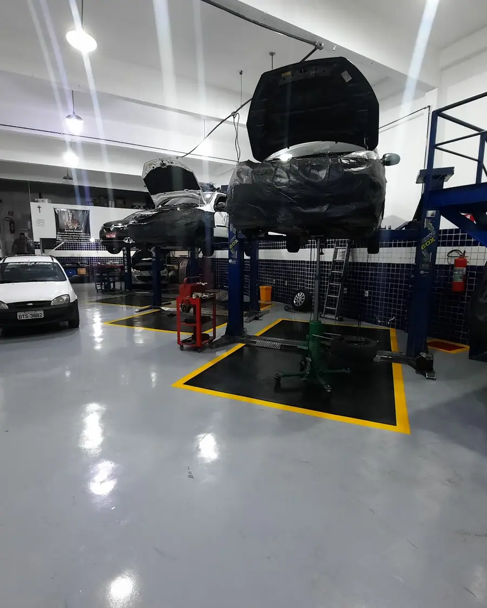
Na Mecânica Embu o carro é avaliado e você recebe só o que realmente precisa ser feito. Tem cliente que confia o carro à oficina há mais de 15 anos.
Sem surpresa na hora de pagar: você sabe o que vai ser feito e quanto custa antes de começar.
Diga o modelo do carro e o que ele está apresentando. A equipe responde e marca o melhor horário.
O carro é avaliado na oficina e você recebe o orçamento explicado, peça por peça, antes de aprovar.
O serviço é feito como combinado e você busca o carro com tudo explicado.
Segunda a sexta: 08h–18h
Veja mais no Instagram @mecanica_embu.
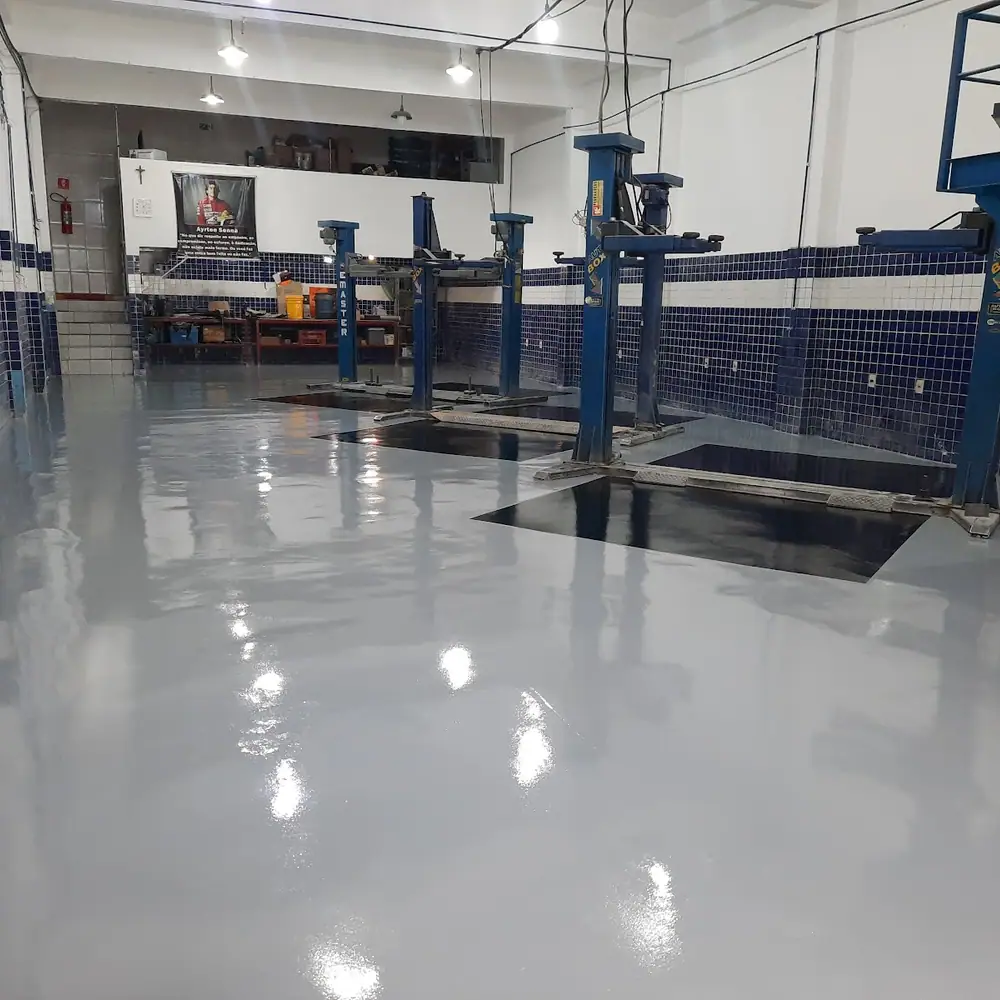
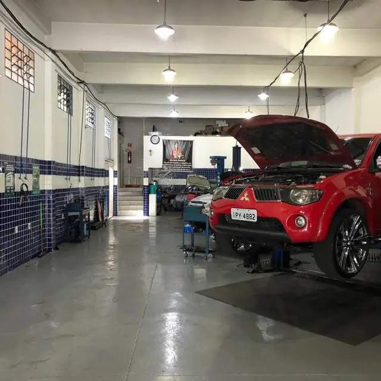
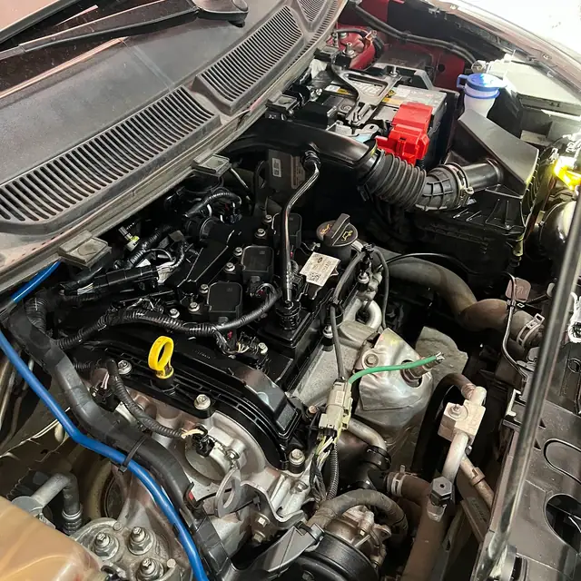
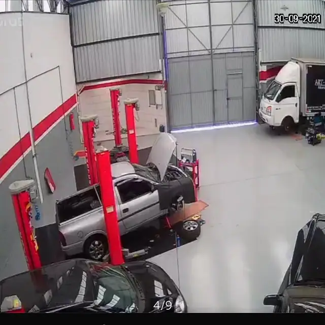
Avaliações reais de clientes publicadas no Google Maps.
“Levo sempre que preciso meu carro lá, até para trocar o óleo e pequenas revisões, a equipe trabalhe bem e é de confiança, nunca tive que voltar para refazer o serviço ou para reclamar. O serviço é bem rápido, geralmente devolve o carro no mesmo dia.”
“Excelentes profissionais, valores dentro do mercado, administração honesta, não te vende o que precisa. Indicou com toda certeza.”
“Minha mecânica de confiança há mais de 15 anos! Confiança e atendimento cordial.”
“Meu Renegade já foi cuidado pela oficina. Tanto revisão quanto reparos menores, incluindo troca de sensores. Atendimento excelente, nenhuma reclamação. Preços são bons e os serviços rápidos.”
“Excelente atendimento, preço justo, fizeram o reparo rapido e eficiente.”
Não achou sua dúvida? Pergunte direto para a equipe no WhatsApp.
A Mecânica Embu fica na Estr. Kaiko, 133, Vila Maria Auxiliadora, em Embu das Artes (SP), CEP 06843-195. Pelo botão "Traçar rota" nesta página você abre o caminho direto no Google Maps.
A Mecânica Embu atende segunda a sexta, das 08h às 18h. Não abre aos sábados e aos domingos. O agendamento é feito pelo WhatsApp.
É só chamar no WhatsApp (11) 94791-6914 pelo botão "Pedir orçamento". Conte o modelo do carro e o que ele está apresentando. A equipe responde e combina o melhor horário para você trazer o carro.
Injeção eletrônica, Motor e cabeçote, Câmbio automático, Suspensão, Freios, Escapamento, Elétrica automotiva e ar-condicionado. O serviço certo para o seu carro é definido depois da avaliação na oficina.
Se a luz piscar ou o carro falhar, pare e chame a oficina. Se ficar acesa sem sintomas, rode com cuidado até fazer o diagnóstico por scanner, que mostra a causa do alerta.
Sim, na maioria dos carros, conforme o manual. O óleo velho causa trancos e desgaste. A troca deve usar o fluido certo para o modelo do câmbio.
Pode ser sinal de amortecedor, bucha ou bieleta gasta. Não costuma parar o carro na hora, mas piora a estabilidade e gasta outras peças. O ideal é avaliar logo.
Quando aparecer chiado ao frear, o pedal ficar mais baixo ou o carro demorar mais para parar. Na revisão, a espessura das pastilhas e dos discos é medida para saber a hora certa.
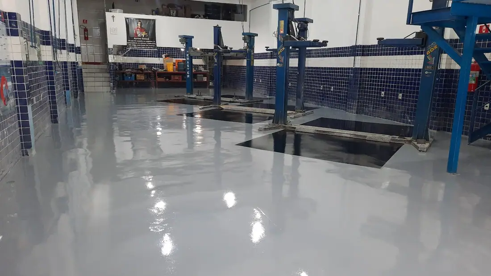
Peça seu orçamento na Mecânica Embu em poucos minutos pelo WhatsApp.